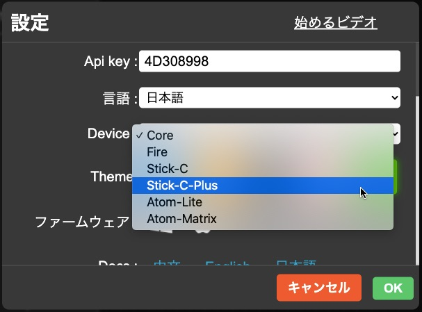
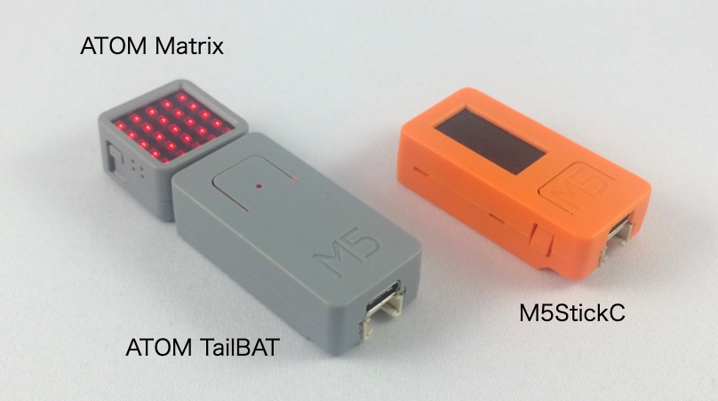
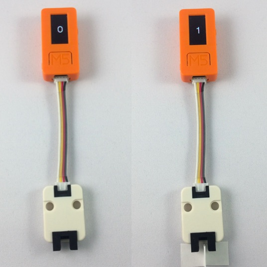
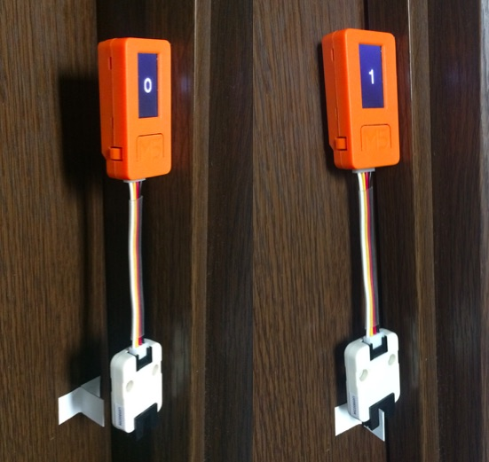

M5Stack社の製品にまつわる新情報を月単位にまとめてお届けするコーナーです。
2020年7月は次の12製品の販売が始まりました。

|
M5StickCを大画面（18.7%拡大）にしたアップグレード製品です。搭載されているマイコン（ESP32-PICO-D4）やインターフェースはM5StickCとほぼ同じですが、ブザーが追加され、バッテリーが120mAhに増強されています。HATやUnitはM5Stickと同じものが利用可能です。 |

|
M5StickCから、腕時計マウンタ等のマウンタ類を除いた、本体とUSB Type-Cケーブルのみの製品です。 |

|
ATOM用の190mAhの外付けバッテリで、M5ATOMに直接給電できます。一方の面のUSB Type-CとGroveインターフェースでATOMと接続し、もう一方の面のUSB Type-CとGroveインターフェースにパソコンやGroveセンが接続できます。 |

|
産業用途でよく使われるシリアル通信規格のRS485のATOM用コンバータです。RS485の12V電圧を内蔵のDC/DC電圧レギュレータで5Vに変換し、ATOMに給電するので、別途バッテリーを用意する必要がありません。 |

|
対向する赤外線の送受信部（赤外線反射ユニット）があり、その間を物が遮ることを検出するセンサユニットです。2製品あり、本製品は赤外線反射ユニットがGroveコネクタと水平な方向についています。 |

|
180° 赤外線反射ユニットと同様の製品で、こちらの製品は赤外線反射ユニットがGroveコネクタと垂直な方向についています。 |

|
動きセンサADXL345を搭載した、I2C通信を行う3軸デジタル加速度計ユニットです。 |

|
LEGO EV3モーター互換の特別なM5ベースです。 |

|
M5Stack BasicやGrayのボトムを、M5GOやFIREと同じボトムにアップグレードするためのパーツです。 |

|
産業用途向けのカスタマイズ可能なボトムで、 PLCモジュールと似ていますが、高度なカスタマイズが可能です。 |

|
M5Core用アクリル外部スクリーン、ボタンと分解工具を含んだM5Coreの外部スクリーン交換キットです。 |

|
M5Stack用M3*12/18/25/32ネジ8個セット（六角レンチ付き） M5Stackの複数のレイヤを固定する場合に使用するネジ8本と、それを締めるための六角レンチのセットです。 |
7月の新商品の中で注目なのは、「M5StickC Plus」と「M5StickC（本体のみ）」です。
M5StickC（以下、StickC）のLCDが0.96インチ、80×160 ピクセルなのに対して、M5StickC Plus（以下、Plus）は1.14 インチ、135x 240 ピクセルに拡大されています。バッテリー容量もStickCが80または95 mAhなのに対して、Plusが120 mAhと強化されていて、より実戦的なスペックになっています。
電子工作などで、センサ値の変化などを音で伝えたいことがあります。StickCは本体にスピーカーやブザーがなく、スピーカーHATで貴重な拡張端子を使ってしまうと、他のセンサHATが使えなくなりましたが、Plusはブザーが内蔵されたので、音を出しつつ、拡張端子をセンサHATに使えるようになりました。これも実用的な仕様拡張です。
プログラムはM5StickCと同様に UI Flow、Arduino IDE、MicroPython で開発できます。UI Flowは原稿執筆時点の最新版の V1.4.5 ではまだPlusはサポートされていませんが、バージョンを「Beta」に切り換えると、「設定」メニューでDeviceに「Stick-C-Plus」が選べるようになります。

M5StickC（本体のみ）は、M5StickCに同梱されていた腕時計マウンタ、ネジ固定用マウンタ、LEGO互換マウンタが含まれず、本体とType-C USBケーブルのみの製品です。IoT端末などでM5StickCを何台も設置したいときにありがたい製品です。
このように、7月のM5StickC 2製品は、今まで以上に実戦的な使用を想定した製品といえるでしょう。
7月にはATOMシリーズの拡張モジュールとして「TailBAT」と「Tail485」という2製品が発売されました。
TailBATは190mAhの外付けバッテリで、写真のようにM5ATOMに直接つないで給電できます。サイズはM5StickCと同じで、高さ、幅はATOM Matrixとも同じになっています。

ATOMと接続する面と逆側にはUSB Type-CとGroveインターフェースがあり、パソコンやGroveセンが接続できます。TailBATの上面のスイッチを1回クリックすると電源がONになり、ダブルクリックするとOFFになります。
Tail485はATOM用のRS485コンバータです。RS485は、産業用途でよく使われるシリアル通信規格です。複数の機器を接続するマルチポイント接続ができ、工場内の機器制御（PLC）などで使われます。
Tail485にはRS485の12V電圧を5Vに変換するDC/DC電圧レギュレータが内蔵されていて、ATOMに給電するので、別途バッテリーを用意する必要がありません。
今月、もう一つ紹介したい商品は「180°/90° 赤外線反射ユニット（ITR9606）」です。ユニットに付いている黒い凹字型の部品が対向する赤外線の送受信部（赤外線反射ユニット）で、その間を物が遮ることを検出します。

出力はデジタルで、物に遮られていない時「0」、遮られている時「1」がGroveのSCLピンに出力されます。M5StickCではSCLピンはGPIO33につながっているので、GPIO33を digitalRead すると値が読めます。
180° 赤外線反射ユニットを使って、ドアの開閉センサを作ってみました。ドアに小さな板を取り付け、ドア枠にM5StickCと赤外線反射ユニットを付けます。ドアが閉まると板がユニットを遮り、開くとユニットを遮らないように設置すると、赤外線反射ユニットでドアの開閉を検知できるようになります。

M5Stack社の製品はホビー用途や教育分野でよく使われていますが、もともと利用領域を限定しない汎用のマイコンシリーズとして開発されています。今回のATOM Tail485やBase26 産業用プロト基板モジュールのように産業分野向けの製品も用意されています。
執筆日：2020年8月17日